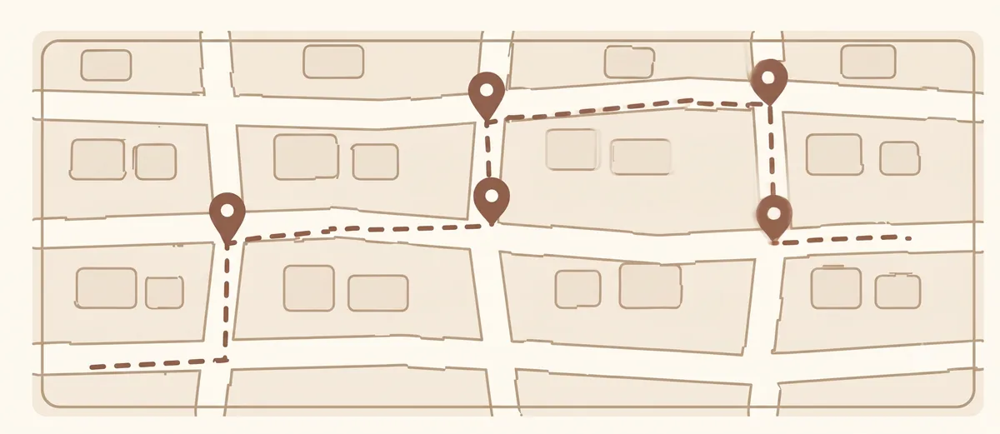
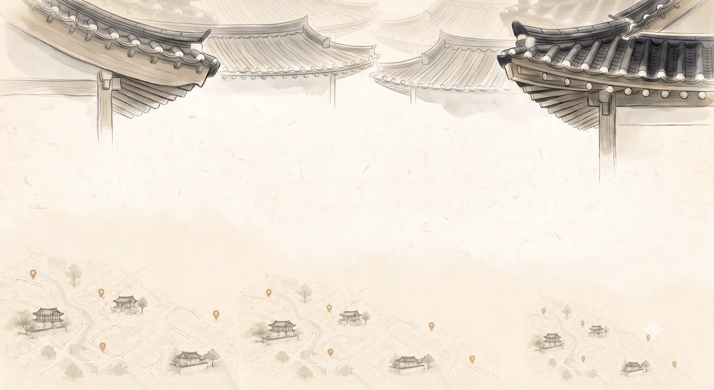
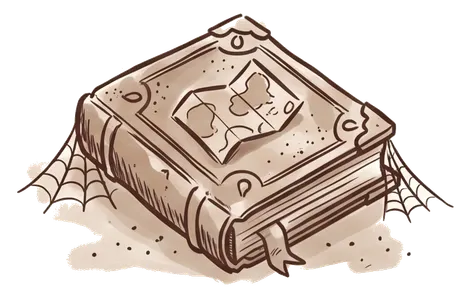
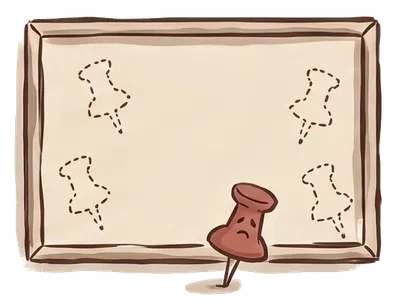

Real Local · 디자인 시안
세 안 모두 베이지 → 화이트, handmade 안에 있다. 갈라지는 것은 색이 아니라 무엇이 손맛을 만드느냐다 — A는 활자와 판형이, B는 손으로 그은 선이, C는 여백이 만든다.
| 대상 | 내용 |
|---|---|
| 세 안 공통 | UI 문구를 전부 영어로 교체 · 홈 첫 화면을 9장에서 3장 + “Show N more maps”로 줄임 (전체 길이 1,588px → 870px) · 지도 상세를 Places / Reviews 탭으로 나눔 · 주소 표기 정규화(Q5) |
| B · Sketch | 빈 화면 4곳 적용 완료 — 받은 손그림 3컷(3094px 원본에서 추출)에 네 번째 “Sign in to save places” 는 우리가 그려 채웠다 |
| C · Hanok | 메인 이미지 교체 + 색 보정(주홍 → 베이지) · accent를 단청 적색에서 큰 면적을 먹으로 넘김(붉은색은 낙관처럼 작게) · 빈 화면 4곳 적용 완료 |
| 토큰 | 커버 미니맵의 점에 --dot 토큰 신설 — 글자색을 투명도로 흐려 쓰다가
팔레트에 없는 녹회색(#958B7D)이 나오던 것을 잡음 |
| B · Sketch | 표제 서체를 Shadows Into Light(손글씨)로 — 손그림과 같은 사람이 쓴 것으로 읽힌다. 라틴만 남겨 15KB, 외부 요청 0(레포에 넣고 같은 출처에서 받는다) · 눈썹줄에서 대문자와 넓은 자간을 걷어냄 · 장소 이름은 산세리프로 남김 — 로마자로 옮긴 낯선 고유명사를 23개까지 훑는 자리라 획이 이어지는 필기체는 읽는 속도를 떨어뜨린다 |
| 첫 화면 카피 | “Not just where. Why.” 로 교체. 이전 세 줄은 ‘로컬이 골랐다’를 세 번 말해 설명문처럼 읽혔다. 맵·장소 개수는 뺐다 — 데이터에서 계산되므로 늘긴 하지만 오픈 초기에 큐레이터가 둘이면 첫 화면에 “2 maps · 11 places”가 박힌다. 개수는 카드마다 이미 나오고 거기서는 맵끼리 비교하는 실용 정보다 |
| C · Hanok | 모서리를 12/16/22로 키움(3/5/7이 A안과 너무 가까워 구분이 안 됐다) ·
accent를 단청 적색 #AA4649로 되돌리고 지도 핀에도 적용 ·
활자를 700으로 (짧아진 카피가 가늘면 그림에 묻힌다) ·
히어로 높이 296 → 236px (글자 위아래 빈 띠를 조여 그림이 글자를 감싸게) ·
메인 이미지의 물방울 핀을 지우고 7개만 다시 그림 — 팔레트와 같은 값,
커버 미니맵의 점과 색이 일치한다 |
컬러: 베이지 → 화이트 톤, handmade 무드
레퍼런스: Airbnb (신뢰감 있는 구조/톤 참고, 컬러는 다름)
어두운 배경과 고채도 오렌지는 검토 대상이 아니다. 세 안 모두 이 범위 안에서 만들었다.
style.css 상단이 이미 토큰만 모아둔 구조라 시안 하나가 CSS 파일 한 장이다.
그래서 PNG를 그리는 대신 토큰 세 벌을 만들고 URL로 갈아끼우게 했다.
클라이언트는 자기 폰에서 진짜 데이터 133곳을 넘겨보며 고르고,
고른 쪽이 그 자리에서 그대로 배포본이 된다. 목업이었다면 고른 뒤 다시 구현해야 한다.
| 링크 | 용도 |
|---|---|
?theme=paper | A안만 — 클라이언트 공유용 깨끗한 화면 |
?theme=sketch | B안만 |
?theme=hanok | C안만 |
?compare=1 | 화면 아래 A/B/C 스위처가 붙는다 |
| (파라미터 없음) | 지금까지의 무채색 빌드 |
주의 — 실시간 토글은 “A의 색에 B의 서체” 같은 요청을 부른다. 슬라이더가 아니라 이름 붙은 완성안 3개로 제시할 것.
| A · Paper | B · Sketch | C · Hanok | |
|---|---|---|---|
| 손맛의 출처 | 활자와 판형 | 손으로 그은 선 | 여백 |
| 서체 | 세리프 (Georgia) | 손글씨 (표제만) | 산세리프, 굵게 · 자간 넓게 |
| 모서리 | 각짐 · 2–4px | 둥긂 · 6–16px | 둥긂 · 12–22px |
| Accent | #33566B 잉크블루 | #8C5A44 흙색 | #AA4649 단청 적색 |
| Accent 쓰는 법 | 표제·필·핀 전부 | 표제·필·핀 전부 | 낙관처럼 작게만. 버튼·필 같은 큰 면적은 먹 |
| 메인 이미지 | 카피 아래 배너 | 카피 아래 배너 | 카피가 얹히는 배경 |
| 빈 화면 4곳 | 글자만 (추가 작화 0) | 손그림 3컷 + 그린 것 1컷 4/4 | 처마 띠 재활용 4/4 |
| 인상 | 정제된 안내서 | 친구가 그려준 쪽지 | 한지에 먹으로 앉힌 안내서 |
accent 세 개는 온도가 서로 다르다 — 차가운 잉크블루, 따뜻한 흙색, 낮춘 흙빛 붉은색. 같은 베이지 바탕에서도 세 안이 분명히 갈린다. C는 구조도 다르다 — A·B는 그림이 카피 아래 붙지만, C는 카피가 그림 위에 얹힌다. C는 accent를 쓰는 법도 다르다 — 붉은색이 큰 면적에서 빠져 있어 화면이 베이지로 남는다.
사람이 손으로 적어 건네준 안내서.
Made by local Humans
Not just where. Why.
Every place comes with a line on why it's worth your time.
LIVE · 실제 앱
npx serve . 후 /docs/07_시안_비교.html친구가 노트에 그려준 동네 지도.
Made by local Humans
Not just where. Why.
Every place comes with a line on why it's worth your time.
LIVE · 실제 앱
npx serve . 후 /docs/07_시안_비교.html한지에 먹으로 앉힌 안내서.
Made by local Humans
Not just where. Why.
Every place comes with a line on why it's worth your time.
LIVE · 실제 앱
npx serve . 후 /docs/07_시안_비교.html사진이 없으므로 없는 사진을 전제한 시안은 만들지 않았다. 지킬 수 없는 약속이 된다. A·B는 같은 대상(지도)을 정반대로 다루고, C는 그림을 아예 바닥으로 쓴다.
A · 133곳의 실제 좌표를 찍은 편집 지도
자로 그은 선, 정확한 위치. 서울 128 / 부산 5를 두 판으로 나눴다 — 부산은 300km 밖이라 한 판에 그리면 서울이 점 하나로 뭉개진다. 제작비가 들지 않고, 장소가 늘면 그림도 같이 자란다. 남이 복제할 수 없는 유일한 그림이며, 카드 커버 미니맵과 자동으로 한 몸이 된다.

B · 손으로 그린 동네 지도 (실제 손그림)
정확하지 않고, 대신 사람이 그려준 것으로 보인다. 흰 길과 그 사이의 땅, 걸어간 자국(점선)과 찍힌 곳들. 데이터와 무관한 장식이라 따로 관리해야 하고, 장소가 늘어도 그림은 그대로다. 원본 5.2MB PNG → 화면에 필요한 1200px WebP 25KB로 줄여 실었다.

C · 처마와 마을 (배경으로 사용 · 색 보정본)
배너가 아니라 바닥이다. 가운데 여백에 카피가 앉고 위 처마와 아래 마을이 글자를 감싼다. A·B와 달리 그림과 글자가 한 덩어리로 읽힌다. 받은 원본은 위쪽이 분홍빛으로 돌아 색상만 베이지 쪽으로 옮겼다 — 채도를 일괄로 낮추면 지붕과 능선의 구분까지 바래므로, 색상환에서 주홍(20–30°)을 황토(30–40°)로 옮기고 옅게 깔린 안개만 빼고 핀은 남겼다. 원본 7.3MB PNG → 1200px WebP 62KB.


B · 받은 손그림 3컷 (3094px 원본에서 추출) + 네 번째는 그린 것
목업 안에서 일러스트만 잘라냈다 — 캡션·탭 구분선·폰 프레임은 앱이 이미 그리는 것이라 뺐다. 자르는 좌표는 손으로 박지 않고 이어진 획 중 가장 큰 덩어리를 찾게 했다. 점선과 캡션 글자는 따로 놀기 때문에 자동으로 떨어진다 — 같은 목업을 다시 받아도 스크립트가 그대로 동작한다. 바깥 배경은 가장자리에서 채워 들어가며 투명하게 뺐다(그림 안쪽 밝은 면은 남는다). 화면에서 96px 높이로 쓰므로 3배 화면 기준 300px로 실었다 — 각각 25 / 12 / 25 KB. 남는 그림을 네 번째 자리에 돌려 쓰지 않았다 — 책=저장한 지도, 보드=저장한 장소, 노트=후기로 뜻이 정해져 있어 다른 자리에 붙이면 다른 의미로 읽힌다.
“Sign in to save places” 에는 받은 그림이 없고, 더 받을 계획도 없다. 남는 그림을 돌려 쓰면 뜻이 겹치므로(책=저장한 지도, 보드=저장한 장소, 노트=후기) 그리는 쪽을 택했다.
커버 미니맵의 동그라미를 손떨림 필터로 처리한 것과 같은 방법이다. 이 안의 전제가 ‘선이 손맛을 만든다’이므로 획만으로 그린 그림이 낯설지 않다. 그린 것은 열쇠 — 이 화면의 뜻이 ‘로그인하면 열린다’이고, 96px 높이에서 형태만으로 읽히는 몇 안 되는 물건이다.
SVG 한 줄이라 내려받을 파일이 늘지 않고, accent를 바꾸면 같이 따라온다. 결과적으로 B안도 추가 작화 0이다.
새로 그리지 않고 히어로 이미지의 위쪽 처마 띠만 잘라 네 곳의 머리말로 쓴다.
네 화면 모두 같은 .empty를 쓰므로 CSS 규칙 하나로 덮인다.
자른 자리에 이음매가 생기는데, 색을 맞추는 대신 아래쪽을 그라데이션으로 녹였다 — 그림을 교체해도 견디는 방식이기 때문이다. 실제로 오늘 히어로를 색 보정했는데 빈 화면은 손대지 않아도 따라왔다.
홈에서 이미 받은 파일이라 내려받을 것이 늘지 않는다 (확인: 홈 1회 → 빈 화면 이동 후에도 1회).
빈 화면 4곳까지 세 안 모두 채워져 있다. 그래서 “어느 쪽이 손이 덜 가는가”는 더 이상 판단 기준이 아니다. 남는 기준은 하나뿐이다.
C안을 고를 때 알고 고를 것 하나 — 그림은 한옥 처마와 옛 마을인데 실제 데이터 133곳은 전부 도시다(을지로·성수·망원·연희·부산). 한옥마을도 산도 없다. 첫 미팅에서 말씀하신 차별점이 “기존 관광 정보에 없는 찐 로컬”이었는데, 전통 이미지는 정확히 그 기존 관광 정보의 얼굴이기도 하다. 그림을 다시 그릴 계획은 없으므로 고르는 시점에 이 점을 감안하면 된다 — ‘한국다움’을 앞세울지, ‘도시의 지금’을 앞세울지의 문제다.
| # | 안건 |
|---|---|
| 1 | A / B / C 중 어느 쪽인가 — 섞지 말 것. “A의 색에 B의 서체” 는 세 안을 다 무너뜨린다 |
| 2 | 미팅록 8장에서 주기로 한 레퍼런스 가이드북은 불발됐다. 컬러표 없이 우리가 제안한 세 팔레트로 확정할지 |
| 3 | 확정되면 theme.js와 스위처를 지우고 고른 토큰을 style.css에 병합한다.
고르지 않으면 여기서 더 나아갈 수 없다 — 목요일 화면들이 전부 이 위에 얹힌다 |
그림을 더 그려 달라는 요청은 없다. 세 안 모두 완성 상태이고, B안의 네 번째 빈 화면과 C안의 이미지도 지금 것으로 확정이다. 남은 결정은 “셋 중 하나”뿐이다.